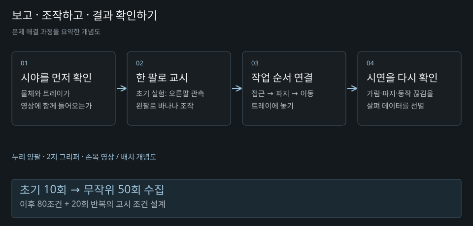
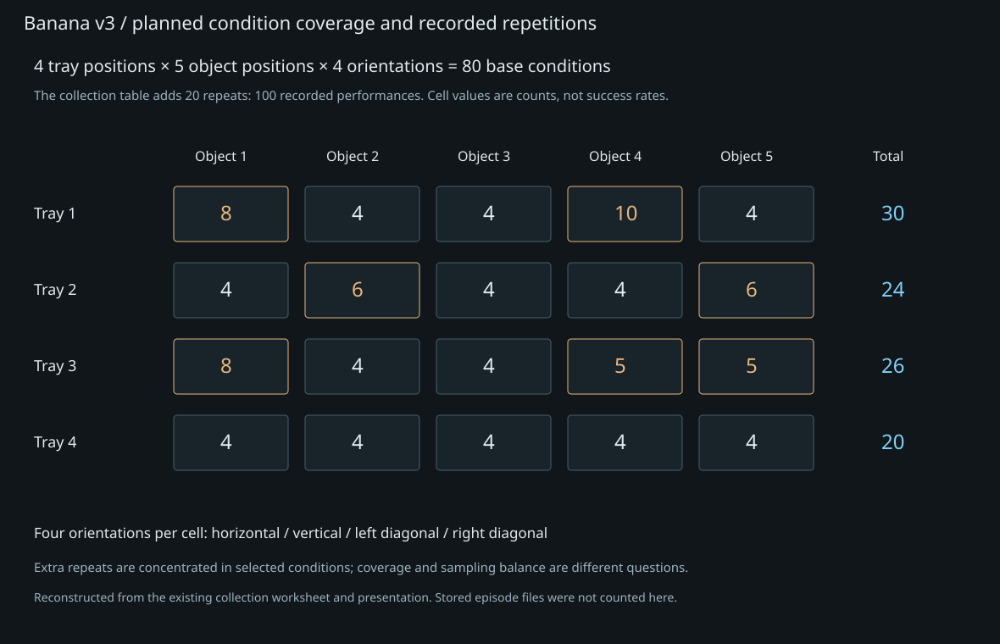

Imitation Learning Pipeline
모방학습 정책 실행 및 실패 분석
2025.12 ~ 2026.06 · 시연 설계 · 수집·검증 · ACT 실행
Teleoperation · ACT · MiMicX
01 / Overview
기존 플랫폼에서 전 과정을 수행
기존 모방학습 플랫폼을 활용해 시연 수집부터 학습·추론과 실로봇 실행까지 수행했습니다. 모델 아키텍처나 전체 학습 플랫폼을 처음부터 개발한 경험과 구분합니다.
- Teleoperation · 작업 순서 교시
- Dataset · Episode 검증·선별
- ACT Training · 데이터·학습 설정
- Inference · 현재 관측 → 예측 행동
- Robot Execution · 실로봇 Rollout 관찰
02 / Data Collection
수집 횟수보다 먼저 조건을 설계
바나나의 위치·자세와 트레이 위치를 80개 기본 조합으로 나누고, 추가 반복을 포함한 100회 교시 조건을 설계했습니다. 이는 작업 성공 100회를 뜻하지 않습니다.
Pick & Place와 Handover 등 작업의 접근·파지·이동·놓기 순서를 구성했습니다. 카메라 시야, 파지 순서와 동작의 연속성을 점검해 Episode를 선별했습니다. 어느 위치와 자세가 빠졌는지 확인하며 다음 수집 조건을 정했습니다.
03 / Failure Analysis
Loss와 실제 작업 성공은 다른 확인 대상
ACT 학습·추론과 실로봇 Rollout을 수행했습니다. 양팔 실험에서는 낮은 학습 Loss에도 카메라·테이블 배치를 바꾼 뒤 작업 실패가 발생했습니다. 수집 시점과 실행 시점의 관측 조건이 달라졌다는 사실과 학습 지표를 별도로 기록했습니다.
학습 오차의 감소만으로 새 배치에서의 파지·놓기 성공을 보장할 수 없었습니다. 환경 배치를 수집 조건과 맞추고, 변경한 조건을 구분해 보는 것이 이후 실험의 기준이 되었습니다.
04 / Experiments
실험별 장비·데이터·실행 조건
| 실험 기록 | 수집 환경·수행 내용 | 확인한 결과 / 한계 |
|---|---|---|
| Banana v1 · 3월 18일 | 누리 양팔·2지 그리퍼·VIVE 입력·손목 영상 2대. 오른팔은 관측 위치에 고정하고 왼팔로 조작. 위치·자세·트레이를 고정한 10회 교시 | 전체 동작 연결과 실행 관찰. 최종 반복 성공률로 사용하지 않음 |
| Banana v2 · 3월 23일 | 트레이·초기 자세를 고정하고 바나나 위치·자세를 임의로 바꾼 50회 수집 | 유사 조건 중복과 빠진 조합 확인. 왼팔에서 먼 수직 배치에서 파지 어려움 |
| Banana v3 · 3월 25일 | 트레이 4위치 × 물체 5위치 × 자세 4종, 추가 반복 포함 100회 수행 조건 | 조건표 합계와 유효 저장 Episode 개수·정책 성공 횟수는 별도 확인 대상 |
| 후속 양팔 배치 실험 | 양팔 상태·손목 영상 2대·중앙 영상 1대 입력; ACT 실행 | 카메라 각도·테이블 배치 변경 후 작업 실패 관찰. 실패가 어느 단일 원인 때문인지 확정하지 않음 |

작업 순서와 데이터 선별
| 작업 | 교시한 순서 | 관찰·선별 기준 |
|---|---|---|
| Pick & Place | 물체 접근 → 중앙 파지 → 이동 → 트레이에 놓기 | 물체와 목적지가 영상에 함께 들어오는지 확인; pick/place에서 잠시 정지 |
| Handover | 오른팔 파지 → 왼팔로 전달 → 왼팔 grasp → 오른팔 release → 트레이 배치 | 손목 영상의 가림과 파지 주체가 바뀌는 순서 확인 |
| 양팔 순차 배치 | 오른팔 바나나 배치·복귀 → 왼팔 물체 배치·복귀 | 두 팔 동작을 모두 동시 수행으로 표현하지 않음; 끊기거나 멈칫한 Episode 제외 |

학습 설정과 실패 관찰을 같은 실험 단위로 읽기
| 항목 | Banana v2 기록 | 후속 양팔 학습 기록 |
|---|---|---|
| 모델 입력 | 왼팔 위치·속도·그리퍼 + 양쪽 손목 영상 | 양팔 위치·속도·그리퍼 + 손목 영상 2대 + 중앙 영상 1대 |
| 전처리 | TCP 기준 relative on · 책상 영역 crop | absolute · no crop · is_progress |
| 학습 메모 | 약 500 epoch · 약 10시간 20분 · Loss 0.0067 | ACT Full · batch 16 · 최대 1000 epoch 설정; 50 epoch에서 Loss 약 0.01 관찰 |
| 실행 해석 | 특정 위치·자세의 파지 어려움을 다음 수집 조건에 반영 | 카메라·테이블 배치 변경 후 실패 반복; 학습 오차와 실로봇 작업 성립을 구분 |
위 설정은 서로 다른 실험의 메모를 구분한 것입니다. 1000 epoch는 설정 상한이며 실제 완료 epoch를 뜻하지 않습니다. 카메라·배치가 함께 바뀐 실험에서 개별 변수의 인과 효과나 정확한 실패 단계는 현재 자료만으로 분리할 수 없습니다. 성공률을 새로 만들거나 학습 Loss를 작업 성공률로 바꾸지 않았습니다.
05 / Scope
직접 개선과 실험 수행의 범위
직접 개선한 다중 로봇 지원과 Replay 기능은 별도 실무 사례에서 설명합니다. 이 사례는 기존 플랫폼에서 수행한 시연·학습·실행 경험입니다. 확인된 반복 성공률을 제시하지 않으며 Diffusion Policy의 실로봇 실증 결과도 포함하지 않습니다.
관련 기록: 기술 아카이브 ↗